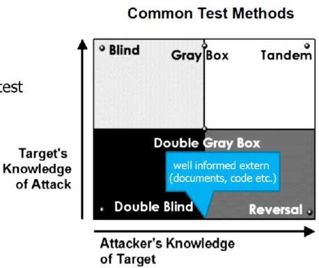

Lecture 3 - Penetration testing
Goals
- You know waht penetration tests are and have learned the basiscs to them
- You know the methods and tools to do penetration tests and can explain important parameters (scope, rules of engagement, test methods etc.)
- you are aware of the standards
What is a penetration test?
Several definition exist:
Penetratoin testing is security testing in which assessors mimic real-world attacks to identify methods for circumeventing the security features of an application, system or network.
Penetration test is the simulation of an attack on a system, network, piece of equipment or other facily with the objective of proving how vulnerable that system or "target" would be to a real attack.
Proving has to be considered together with the scope... it's very hard if not impossible to quantify. Also your assesment s only true for a short time, i.e. the time you made the analysis.
A more business oriented definition
A penetration test serves to analyse the entire or designated parts of the IT-environment of a company with the goal to find and explit vulnerabilities and to identify the business risk associated with them.
Motivation
Reasons vary a lot
- Find holes ind your denfenses before attackers do
- Test defenders to succesfully detect and respond to attacks
- raise oveall security awareness
- very secure system configurations and/or test new technology
- Discover gaps in compliance posture and statisfy legal and governmental requirements
- usually a very basic one, because the people just need to make a chek in a report that tehy have done a pentest
Focus and Acope
Common types:
- Hacking and controlling IT assets
- getting access to a certain piece of information
- penetration physical security (extract key from smartcard)
- social engineering (convincing someone to open an attachment)
It has a clear but limited scopes
- web application penetration test conducted only from the point of view of the internet browser
- try to access a system managing the bank accounts of non-Swiss citizens from an outsider's point of view
Success factors
Experience, skills, wherewithal, lateral and out of the box thinking.
Vulnerability scaning or compliance audits are NOT pentests!
Classic pen-testing cycle
- Reconnaissance
- Threat modeling and vulnerability analysis
- Exploitation/Pnetration
- Reporting
How to pentest?
- Open source security Testing Methodology Manual (OSSTMM)
- read this and get certified if pentesting is your companies main business
- OWASP Testing Guide (V4.0)
- for testing web applications
- Has hands-on advice
- NIST SP800-115 Technical Guide to Information Security Testing and Asssesment
- Penetration testing execution standard (PTES)
- Explains basic principles
- includes both detailed instructions and framework diagrams
- PTES is the basis for this course
- There are a lot of other ressources too on the internet

Preengagement Interactions
- Scoping
- Rules of engagement
Scoping
- Defines what is to be tested
- an in.depth test of a single application attacked over the internet ithout the help of emloyees? (deep but small coverate)
- test widerange IP adresses to find a way into the company network.
- outlines how the testers should spend their time
The customers usually don't know exactly what they want and the challange is to find this out.
What
- information about vulnerabilities and the risk
- reccomendations on how to fix the security
- a checkmark in a checkbox
- discredit someone in a different department
Why
- suspects that tehy have a serious security problem
- to meet compliance
- because management wants products/services pentested before going live (usually veeery short timescope)
- if you find a high risk the management is usually in a big problem if you find it
Common types
- Network (e.g. try to get into the intranet)
- Web application (e.g. get access to customer data)
- wireless network
- physical (e.g. enter a secured area and access a specific asset)
- social engineering
What the means used to interact the assets should be
- human
- physical
- wireless
- telecomunications
- Data networks
What is Tested and How?
- what assets are included/excluded from the test
- the entire web application except the billing
- list of IPs to be tested
- are assets of third parties are affected? Which? (need to be VERY careful here)
- cloud services
- internet service provider
=> check terms of sevice
=> check mpact on test results (e.g. filtering malicious traffic, DoS etc.)
Common test methods
- blind: war gaming, role play
- Double Blind: blind box, classical penetration test
- Gray Box: vulnerability test
- Double Grey Box: whitebox testing
- Tandem: crysta box testing
- Reversal: Red Team Experience
-><-
How do you define the scope?
- use a questionaire to guide the process of defining the scope
- PTES provides lists with questions
- the lists are far fom complete but a good starting point
Risks of scope defining
Scope creep:
Extentions/alteration of the scope requiring more time and effort
-> don't give in to the customer
Communication
- People onn the list of contacts
- all penetraion tsters
- the manager
- Two technical contacts at each target organization
- Two technical contacts at the customer
- Incident reporting Process
- Status report frequency
- PGP and other alternatives
Rules of engagement
- identifies work items and resources (people, equipment)
- Synchronization times
- Timeline
- status meetings
- Time to test
- use of evasion/stealth techniques
- evidence handling
Sensitive information
Get the permission to test!!!!!!
- Do not store/access personally identifiable information
- do not store/access sensitive personal information
But how do you prove it?
- Screenshots of the database schema (not the data)
- screenshot of the file permissions along with the current user
- capture a piece of information (flag) placed there for this purpose